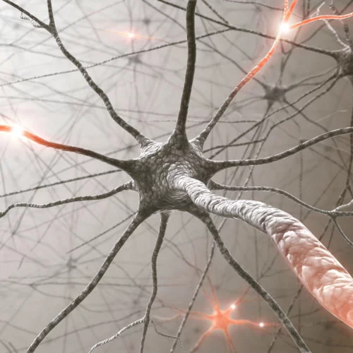
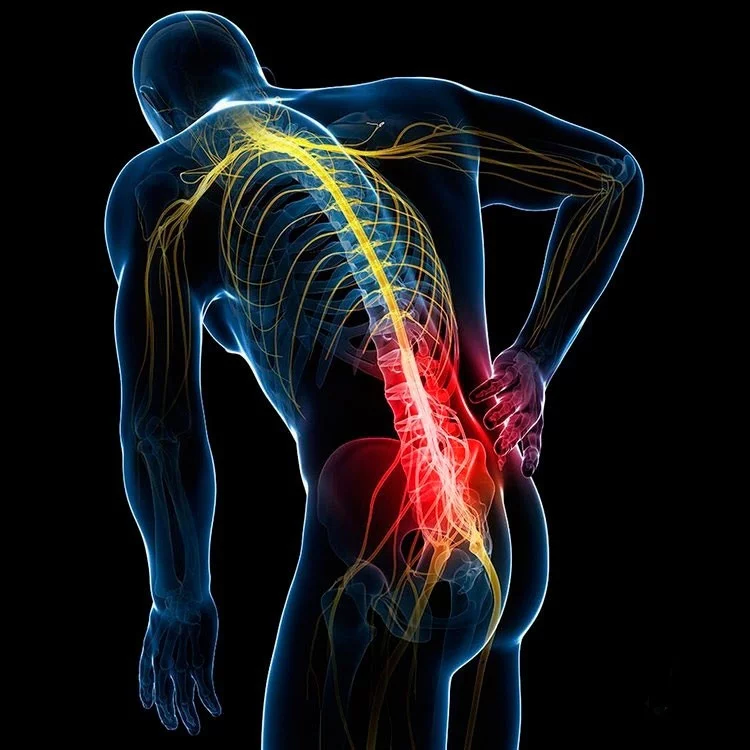

Хронические боли
Хронические боли - это продолжительные болевые симптомы, которые длятся более трех месяцев. Они могут быть вызваны различными заболеваниями и травмами, и часто сопровождаются ограничением подвижности, усталостью, раздражительностью и другими симптомами. В этой статье мы рассмотрим, как мануолог может помочь при хронических болях.
Причины хронических болей
Причины хронических болей могут быть различными, и они часто бывают связаны с заболеваниями или травмами. К наиболее распространенным причинам относятся:
- Болезни опорно-двигательного аппарата, такие как артрит, остеоартроз, остеопороз и сколиоз.
- Неuropатические боли, которые возникают в результате повреждения нервов, например, при диабетической нейропатии или постгерпетической невралгии.
- Фибромиалгия - это хроническое заболевание, характеризующееся хронической болью в мышцах и суставах, а также другими симптомами, такими как усталость, нарушения сна и когнитивные расстройства.
- Хронические головные боли, такие как мигрень или Spannungskopfschmerz (напряженная головная боль).
- Болезненные синдромы, связанные с внутренними органами, например, хроническая боль в животе или боль в груди.

Симптомы хронических болей
Симптомы хронических болей могут варьироваться в зависимости от причины и локализации боли. Общие симптомы включают:
- Постоянную или периодическую боль, которая может быть тупой, острой, жгучей или пульсирующей.
- Уменьшение подвижности или ограничение движений в пораженной области.
- Усталость, раздражительность, депрессию или другие эмоциональные расстройства.
- Нарушения сна.
Как мануальный терапевт может помочь при хронических болях?
- Улучшение подвижности суставов и мышц: Хронические боли часто сопровождаются ограничением подвижности суставов и мышц. Мануальная терапия может помочь восстановить нормальную подвижность суставов и мышц, что приводит к уменьшению боли и улучшению функции.
- Уменьшение напряжения мышц: Хронические боли часто вызывают напряжение мышц, которое может ухудшить симптомы и ограничить подвижность. Мануальная терапия может помочь расслабить напряженные мышцы и уменьшить боль.
- Улучшение кровообращения: Мануальная терапия может стимулировать кровообращение в пораженной области, что может помочь уменьшить боль и ускорить выздоровление.
- Улучшение осанки и равновесия: Хронические боли часто вызывают нарушения осанки и равновесия, которые могут ухудшить симптомы и ограничить функцию. Мануальная терапия может помочь восстановить нормальную осанку и равновесие, что может привести к уменьшению боли и улучшению функции.
- Уменьшение воспаления: Некоторые техники мануальной терапии могут помочь уменьшить воспаление в пораженной области, что может привести к уменьшению боли и ускорению выздоровления.
Как проходит сеанс мануальной терапии?
Сеанс мануальной терапии обычно длится от 30 минут до часа. Врач-мануолог будет использовать ручные техники для оценки подвижности суставов и мышц, а также для лечения пораженной области. Техники могут включать растяжение мышц, манипуляции суставами, мягкие техники, такие как лимфодренажный массаж, и другие методы, направленные на уменьшение боли и напряжения.
Заключение
Мануальная терапия может быть эффективным методом лечения хронических болей. Она может помочь восстановить нормальную подвижность суставов и мышц, уменьшить напряжение мышц, улучшить кровообращение, осанку и равновесие, а также уменьшить воспаление. Если вы испытываете хронические боли, то стоит рассмотреть возможность посещения мануального терапевта для оценки и лечения. Однако, как и при любом методе лечения, важно проконсультироваться с врачом перед началом лечения.